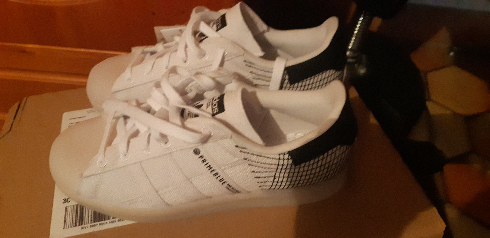

assez troll, here is my presentation bron(échantillon)
Nihao, aujourd’hui je vais vous parler de l’économie maritime en Chine, en mettant l’accent sur ses quelques-uns de ses plus grands ports parce qu’ils reflètent la montée en puissance de la Chine dans l’économie mondiale.
Je vais tout d’abord vous montrer une vidéo qui montre bien l’importance des exportations et des ports en Chine.
Maintenant, je vais entrer un peu plus dans les détails en vous parlant de quelques ports chinois figurant parmi les plus importants à l’échelle mondiale.
Déjà, parmi les 10 premiers ports mondiaux, 7 sont chinois, dont le 1er.
Je vais commencer par présenter le port de la cité sur la mer, c’est-à-dire Shanghai, qui est le premier port mondial depuis 2010 et le plus grand port du monde avec sa superficie de 3 620 km2.
Il se trouve sur le littoral de la mer de chine orientale et de l’océan Pacifique et est aussi à l’embouchure du fleuve Chang Jiang, qui veut dire « long fleuve » puisqu’il est le plus long fleuve d’Asie. Et il est réparti en 3 zones comme vous pouvez le voir sur le schéma.
La première zone est le port historique de Shanghai. Il est dans le centre-ville de Shanghai et ne peut pas recevoir les navires les plus modernes et les plus grands. Alors, est venue l’ouverture du port de Waigaoqiao en 1990, qui est très grand. Il permet d’accueillir des navires plus modernes. Néanmoins, comme la Chine a connu une énorme augmentation du trafic maritime, un nouveau port a dû être construit, c’est le port de Yangshan. Il se trouve sur les îles Yangshan, à 32.5 kilomètres du territoire chinois. Et donc, le pont du Donghai permet de relier le port à la ville de Shanghai.
Alors, l’économie chinoise a tiré profit de Shanghai du fait de sa localisation permettant d’accéder à la fois aux pays voisins et à l’intérieur du pays via le fleuve Chang Jiang. La Chine a donc beaucoup investi dans le port de Shanghai, afin de pouvoir assurer l’évolution du trafic de marchandises.
Complémentairement au port, la ville de Shanghai a elle-même évoluée très très rapidement, comme vous pouvez le voir sur les images.
Ensuite, je vais parler du port de Guangzhou. Cette fois, je vais commencer par présenter la ville. Guangzhou se nomme aussi Canton. Et non, le riz cantonais ne vient pas de Canton mais de Yangzhou, près de Shanghai. C’est la plus grande ville du Sud de la Chine depuis l’Antiquité
lien support de prés : https://www.canva.com/design/DAE3z22cqb8/hNfgncO-ZR4yAREI330Xqg/view?utm_content=DAE3z22cqb8&utm_campaign=designshare&utm_medium=link&utm_source=publishsharelink

voici le hanyu comme disent les bretons
met le son au max qd tu cliques sur le 1er lien stp
assez troll, here is my presentation bron(échantillon) Nihao, aujourd’hui je vais vous parler de l’économie maritime en Chine, en mettant l’accent sur ses quelques-uns de ses plus grands ports parce qu’ils reflètent la montée en puissance de la Chine dans l’économie mondiale. Je vais tout d’abord vous montrer une vidéo qui montre bien l’importance des exportations et des ports en Chine. Maintenant, je vais entrer un peu plus dans les détails en vous parlant de quelques ports chinois figurant parmi les plus importants à l’échelle mondiale. Déjà, parmi les 10 premiers ports mondiaux, 7 sont chinois, dont le 1er. Je vais commencer par présenter le port de la cité sur la mer, c’est-à-dire Shanghai, qui est le premier port mondial depuis 2010 et le plus grand port du monde avec sa superficie de 3 620 km2. Il se trouve sur le littoral de la mer de chine orientale et de l’océan Pacifique et est aussi à l’embouchure du fleuve Chang Jiang, qui veut dire « long fleuve » puisqu’il est le plus long fleuve d’Asie. Et il est réparti en 3 zones comme vous pouvez le voir sur le schéma. La première zone est le port historique de Shanghai. Il est dans le centre-ville de Shanghai et ne peut pas recevoir les navires les plus modernes et les plus grands. Alors, est venue l’ouverture du port de Waigaoqiao en 1990, qui est très grand. Il permet d’accueillir des navires plus modernes. Néanmoins, comme la Chine a connu une énorme augmentation du trafic maritime, un nouveau port a dû être construit, c’est le port de Yangshan. Il se trouve sur les îles Yangshan, à 32.5 kilomètres du territoire chinois. Et donc, le pont du Donghai permet de relier le port à la ville de Shanghai. Alors, l’économie chinoise a tiré profit de Shanghai du fait de sa localisation permettant d’accéder à la fois aux pays voisins et à l’intérieur du pays via le fleuve Chang Jiang. La Chine a donc beaucoup investi dans le port de Shanghai, afin de pouvoir assurer l’évolution du trafic de marchandises. Complémentairement au port, la ville de Shanghai a elle-même évoluée très très rapidement, comme vous pouvez le voir sur les images. Ensuite, je vais parler du port de Guangzhou. Cette fois, je vais commencer par présenter la ville. Guangzhou se nomme aussi Canton. Et non, le riz cantonais ne vient pas de Canton mais de Yangzhou, près de Shanghai. C’est la plus grande ville du Sud de la Chine depuis l’Antiquité
lien support de prés : https://www.canva.com/design/DAE3z22cqb8/hNfgncO-ZR4yAREI330Xqg/view?utm_content=DAE3z22cqb8&utm_campaign=designshare&utm_medium=link&utm_source=publishsharelink
et comme tt ce contenu qualitatif ++ est gratuit, je te demande de noter mes nouvelles shoes (PS: Qu'est-ce qu'un dijhadiste chinois ?)
